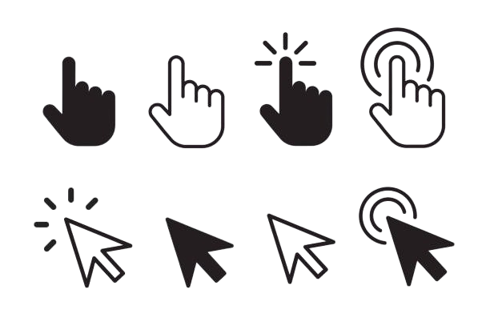
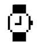
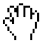
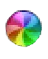
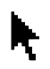
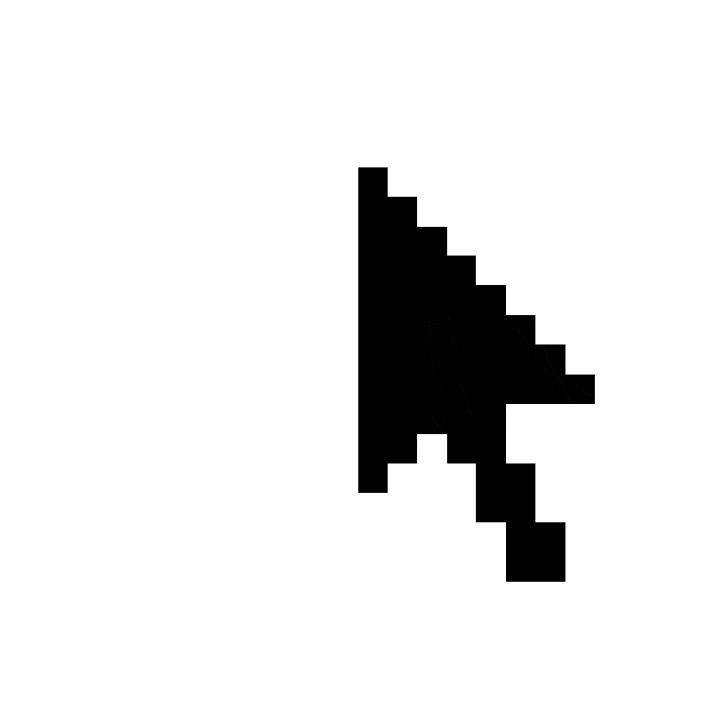

Cursors are a small but important part of user experience. Their design, usage and behavior help users understand how to interact properly with a website.

This project explores how cursor customization and micro-interactions influence user experience. I've added a settings system, in which you can customize your own experience. By experimenting with these elements, you can design your own newspaper interaction with the following themes: "Cursor, Colors, Fonts, Hover and Effects"




